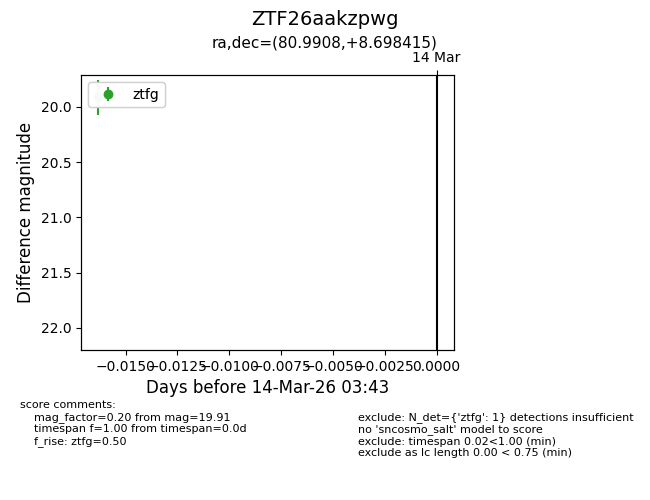
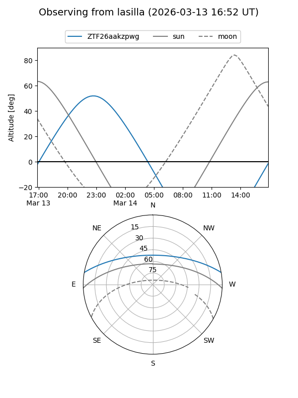
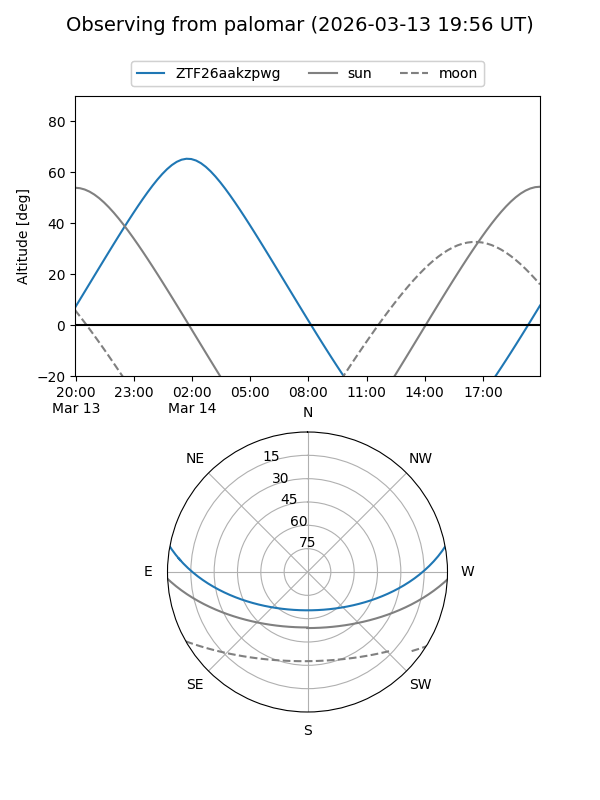

ZTF26aakzpwg
Target ZTF26aakzpwg at 2026-03-14 03:44
Aliases and brokers:
FINK: link
Lasair: link
ALeRCE: link
alt names
ZTF26aakzpwg (ztf,fink_ztf)
Coordinates:
equatorial (ra, dec) = 80.9908,+8.69841
equatorial (HMS+DMS) = 05:23:57.79,+08:41:54.29
galactic (l, b) = (194.6827,-14.99476)
Flags:
Photometry:
last ztfg=19.91
1 ztfg detections
Lightcurve

Visibility


Additional plots